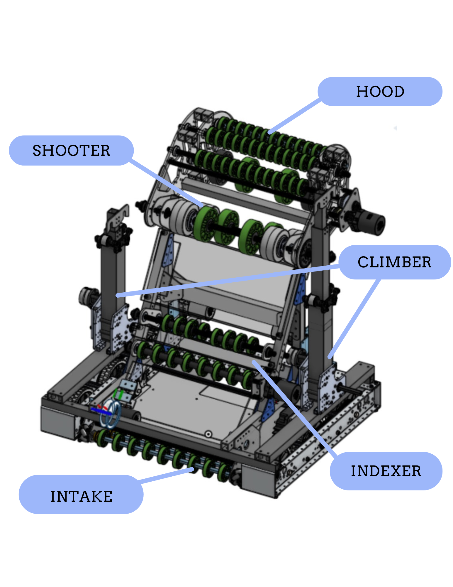
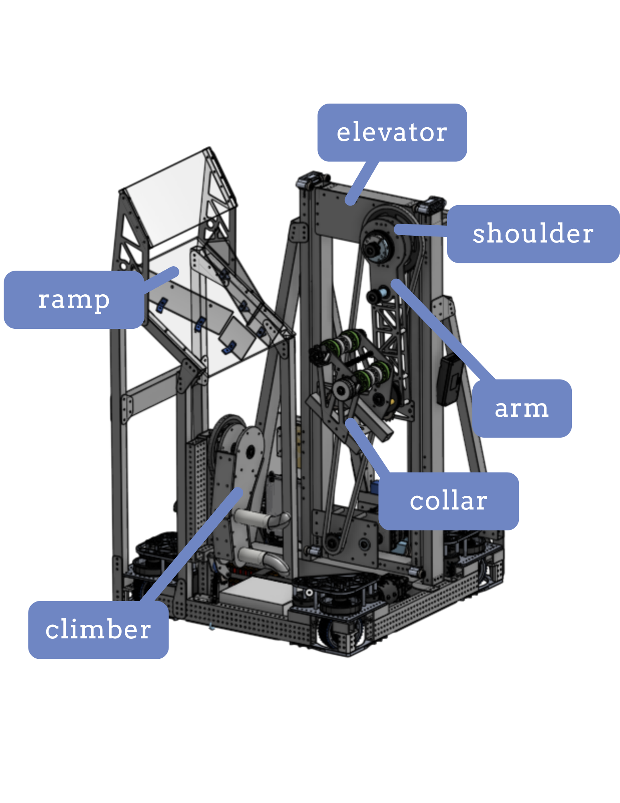

MK
Workbench
Resume
◐ Dark
◌ in progress
Holographic Camera Display
5-BAR MECHANISM
◎ dormant
5-Bar Linkage / Quadruped
PULL-OUT WHITEBOARD
◎ dormant
◎ dormant
Rubber Duck Flinger
ESE 2000
x ∈ ℝⁿ
z = W·x + b
linear transform
W
b
h = σ(z)
ŷ ∈ ℝᵐ
feedforward layer
ŷ = σ(Wx + b)
L = −Σ y log ŷ
∂L/∂W = ...
→ backprop
BLOOM BOARD
3×3 · servo-actuated · 3D printed
◌ in progress
Bloom Board

◉ completed · 2024
Calliope · FRC Team 6418

◉ completed · 2025
Dynamene · FRC Team 6418
Current Obsessions
Program Verification
turning programs into first-order logic; generator construction
encoding programs as FOL formulas, then searching for counter-examples via generators
Physical Intelligence
how robots learn dexterous, adaptive physical skills
the gap between simulation and real contact; manipulation as the hard frontier of embodied AI
Topology
as higher-level math; the language underneath
open sets as the right abstraction; continuity as a structural property, not a metric one
✕